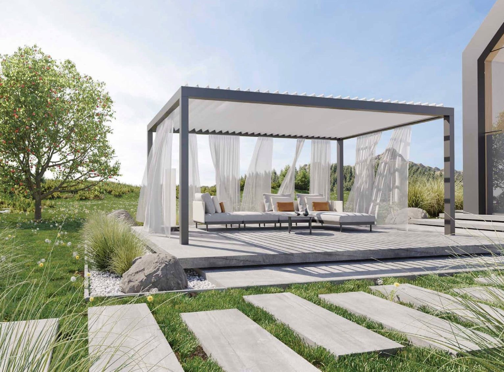

Jar
Jar
Prvé teplo, ešte studený vietor
Lamely nastavíte podľa slnka a prúdenia vzduchu. Bočná ZIP roleta môže obmedziť vietor a nízke slnko.
Hliníkové lamely sa natočia od úplného zatvorenia po otvorené nebo. V daždi sa zavrú a voda odtečie prievlakom, v horúčave nechajú prejsť vzduch.
Prečo bioklimatická
Pevná strecha vie jedno: tieň. Otočné lamely vedia tieň, prievan, dážď aj otvorené nebo — a prepnete medzi nimi za pár sekúnd.
„Je to ako sedieť pod stromom.“ tak to opisujú zákazníci
Jar
Lamely nastavíte podľa slnka a prúdenia vzduchu. Bočná ZIP roleta môže obmedziť vietor a nízke slnko.

LetoLamely nastavíte do tieňa alebo ich pootočíte tak, aby cez strechu prúdil vzduch.
 Jeseň
Jeseň
Zatvorené lamely tvoria vodotesnú strechu a voda sa odvádza integrovaným odvodnením. Senzory sú dostupné ako doplnková výbava.
 Zima
Zima
ZIP rolety, sklenené panely a ohrievače sú voliteľná výbava. Sneh a iné dodatočné zaťaženie treba zo strechy odstrániť podľa pokynov výrobcu.
Štyri obrázky sú vizualizácie výrobcu — tá istá pergola v štyroch ročných obdobiach. Skutočné montáže sú nižšie v galérii.
Z našich montáží
Tá istá strecha ráno, na obed aj večer.

Pergola s pootvorenými lamelami

Detail lamiel v otvorenej polohe

Pergola s LED osvetlením po zotmení

Pergola so zatiahnutými ZIP roletami

Pergola nad sedením pri vinárstve
Z čoho je to postavené
Otočná strecha je len jedna časť. To, či pod ňou v daždi nezmoknete a či sa zavrie sama, rozhoduje odvodnenie a elektronika.
Prejsť na nezáväznú ponukuLamely
Zatvorené lamely tvoria súvislú strechu, otvorené pustia dnu vzduch aj svetlo. Hliník s práškovým lakom.
Lamely
otočné hliníkové
Materiál
hliník, lak RAL
Odvodnenie
Voda ide zo strechy do prievlaku, prievlakom do stĺpa a do zeme. Na fasáde ani na konštrukcii nie sú žiadne vonkajšie zvody.
Zvody
žiadne vonkajšie
Cesta vody
strecha → stĺp → zem

Ovládanie
Diaľkové ovládanie alebo vypínač na stene. Snímače dažďa, vetra a slnka zatvoria lamely samy.
Ovládanie
diaľkové aj vypínač
Snímače
dážď, vietor, slnko
Čo je v cene
Zostavy a využitie
Podľa typoradu má jeden modul limity uvedené výrobcom; pri vybraných zostavách je pokrytá plocha do 45 m². Väčšiu plochu možno skladať z viacerých modulov a pergolu vieme napojiť na prístrešok Soltec, takže dom, terasa aj auto ostanú pod jednou líniou.
Poslať rozmer terasy
Voľne stojaca
Stojí sama na štyroch alebo šiestich stĺpoch — pri bazéne, uprostred záhrady alebo nad ohniskom. Stenu, o ktorú by sa oprela, nepotrebuje.
Stĺpy
4 alebo 6
Kotvenie
do pätiek alebo dlažby
Pri dome
Buď stojí na vlastných stĺpoch tesne pri fasáde, alebo sa k stene kotví — rozhodne to, čo stena unesie. Lamely sa dajú otočiť tak, aby v zime slnko do izieb púšťali a v lete ho zadržali.
Osadenie
kolmo aj rovnobežne
Výška stĺpa
najviac 3 m

Uzavretá zo strán
ZIP rolety, sklo alebo posuvné panely uzavrú boky. S infraohrievačom sa terasa dá používať od marca do novembra.
Boky
ZIP, sklo, drevo
Boky
volíme pri návrhu
Pergola sa dá postaviť aj do nepravidelného tvaru a s ľubovoľným počtom stĺpov — schémy usporiadaní má výrobca v katalógu a pri zameraní z nich vyberieme tú, ktorá sadne na váš pozemok.
Farby a povrch
Rám aj lamely idú do práškovej lakovne — nie sú eloxované ani fóliované. Osem odtieňov Soltec je v cene pergoly, ktorýkoľvek ďalší z palety RAL sa objednáva zvlášť.
Nechať si poradiť odtieňV cene konštrukcie — zoradené od najtmavšieho


Týchto osem odtieňov je v cene konštrukcie. Ktorýkoľvek iný odtieň z palety RAL dodáme na objednávku — cenu a termín potvrdíme v ponuke.
Odtiene na objednávkuOdtiene na obrazovke sú len orientačné — pri zameraní vám ukážeme lakované vzorkovníky, na ktorých je vidieť aj štruktúru povrchu.
Výbava
Doplnky sa vešajú do drážok v ráme — pridáte ich aj o pár rokov. Povedzte nám dopredu, čo môže pribudnúť.

Tkanina zo sklolaminátu s PVC a priehľadom 3 %, vedená v bočnej lište so zipsom — po stranách nezostávajú škáry. Motor, diaľkové ovládanie a snímač na doplnenie.
Rozmer
do 2 800 × 6 500 mm
Priehľad
3 %

Hliníkový rám s výplňou z dreva alebo hliníka, kolieska v hornej lište a spodné vedenie. Dajú sa nechať posuvné alebo zafixovať.
Výška
do 3 000 mm
Šírka panela
do 1 400 mm
FW25 zo sibírskeho smrekovca, FI30 z ISO panela. Po celej strane alebo len po časti; nesú ich sekundárne stĺpy kotvené do zeme.
FW25 drevo
dĺžka do 4 m
FI30 panel
dĺžka do 6 m

G1 sa posúva do strany, G2 sa skladá na seba. Zastavia vietor a dážď, výhľad nechajú. Zámok ako doplnok.
Sklo
kalené 10 mm
Pohyb
posuvné aj skladacie

Lepené kalené sklo kombinovateľné s pergolou SL 170 aj SL 240. Púšťa svetlo do miestností za terasou.
Hrúbka
12 alebo 16 mm
Tabuľa
do 800 / 1 200 mm

LED priamo v lamelách alebo v ráme, infraohrievače na predĺženie sezóny. Zásuvka v stĺpe, ovládanie diaľkovým ovládačom alebo mobilom.
Svetlo
LED v lamelách
Teplo
infraohrievače
Normy a záruka
Bioklimatická pergola je tienenie, nie zastrešenie v zmysle stavebných predpisov: pri veľkom snehu alebo silnom vetre sa lamely majú otvoriť. So snímačom to pergola urobí sama, aj keď nie ste doma.
Bioklimatické pergoly · Soltec
Otočné lamely s odvodom vody vedeným v konštrukcii. Väčšie plochy sa skladajú z viacerých modulov. ZIP rolety, sklenené panely, LED a ďalšie doplnky sa vyberajú podľa konkrétneho profilu a rozmeru. Pri návrhu preto overíme kompatibilitu doplnkov ešte pred objednávkou.
6
typových radov SL
do 45 m²
vybrané konfigurácie jedného modulu
Typorady SL
Väčší rozpon, hrubší profil. Nájdite svoj rozmer a vyjde vám model.
Vyskúšať v konfigurátoreLamela 200 / 28
Šírka lamely 200 mm, hrúbka 28 mm. Hrubšia lamela sa na dlhšom poli neprehne — preto majú väčšie modely 36, 42 alebo 60 mm.
Profil 170 / 120
Nosný rám okolo strechy v reze: 170 mm vysoký, 120 mm široký. Profil 240 je vyšší — znesie dlhšie pole aj vyššie zaťaženie.
Stĺp 120 / 120
Hranol 120 × 120 mm. Vnútri ním ide voda zo strechy do zeme, preto na konštrukcii ani na fasáde nie je žiadny zvod.
Najmenší typorad
Lamela 200 / 28 mm
Profil a stĺp
Profil 170 / 120 mm
Stĺp 120 / 120 mm
Najväčší rozmer
4 stĺpy 3,5 × 6,5 m
6 stĺpov 3,5 × 9,3 m
9,3 m
Kotvenie vnútorné aj vonkajšie
Návrhové zaťaženie
podľa rozmeru a konfigurácie
Výška stĺpa
najviac 3 m
Vývody vody
2 – 3 v stĺpoch
Motory
1 – 2
Plocha modulu
najviac 45 m²
Kotvenie
vnútorné aj vonkajšie
Lamela 200 / 36 mm
Profil a stĺp
Profil 170 / 120 mm
Stĺp 120 / 120 mm
Najväčší rozmer
4 stĺpy 4,3 × 6,5 m
6 stĺpov 4,3 × 9,3 m
9,3 m
Kotvenie vnútorné aj vonkajšie
Návrhové zaťaženie
podľa rozmeru a konfigurácie
Výška stĺpa
najviac 3 m
Vývody vody
2 – 3 v stĺpoch
Motory
1 – 2
Plocha modulu
najviac 45 m²
Kotvenie
vnútorné aj vonkajšie
Lamela 200 / 42 mm
Profil a stĺp
Profil 170 / 120 mm
Stĺp 120 / 120 mm
Najväčší rozmer
4 stĺpy 4,8 × 6,5 m
6 stĺpov 4,8 × 9,3 m
9,3 m
Kotvenie vnútorné aj vonkajšie
Návrhové zaťaženie
podľa rozmeru a konfigurácie
Výška stĺpa
najviac 3 m
Vývody vody
2 – 3 v stĺpoch
Motory
1 – 2
Plocha modulu
najviac 45 m²
Kotvenie
vnútorné aj vonkajšie
Lamela 200 / 36 mm
Profil a stĺp
Profil 240 / 150 mm
Stĺp 150 / 150 mm
Najväčší rozmer
4 stĺpy 4,3 × 8 m
6 stĺpov 4,3 × 9 m
9 m
Kotvenie vonkajšie za príplatok
Návrhové zaťaženie
podľa rozmeru a konfigurácie
Výška stĺpa
najviac 3 m
Vývody vody
2 – 3 v stĺpoch
Motory
1 – 2
Plocha modulu
najviac 45 m²
Kotvenie
vonkajšie za príplatok
Lamela 200 / 42 mm
Profil a stĺp
Profil 240 / 150 mm
Stĺp 150 / 150 mm
Najväčší rozmer
4 stĺpy 4,8 × 8 m
6 stĺpov 4,8 × 9 m
9 m
Kotvenie vonkajšie za príplatok
Návrhové zaťaženie
podľa rozmeru a konfigurácie
Výška stĺpa
najviac 3 m
Vývody vody
2 – 3 v stĺpoch
Motory
1 – 2
Plocha modulu
najviac 45 m²
Kotvenie
vonkajšie za príplatok
Lamela 270 / 60 mm
Profil a stĺp
Profil 240 / 150 mm
Stĺp 150 / 150 mm
Najväčší rozmer
4 stĺpy 6 × 6 m
6 stĺpov 5 × 8 m, najviac 40 m²
8 m
Kotvenie vonkajšie za príplatok
Návrhové zaťaženie
podľa rozmeru a konfigurácie
Výška stĺpa
najviac 3 m
Vývody vody
2 – 3 v stĺpoch
Motory
1 – 3
Plocha modulu
najviac 40 m²
Kotvenie
vonkajšie za príplatok
Rozmery sú najväčšie pre jeden modul (šírka × dĺžka), výška stĺpa najviac 3 m. Každá pergola má 2 – 3 vývody vody a 1 – 3 motory podľa dĺžky. Údaje sú z katalógu Soltec, nosnosť pre váš rozmer dáme k cenovej ponuke.
Cenová ponuka na váš rozmerNa stiahnutie
Katalóg je od výrobcu Soltec, v pôvodnom jazyku. Čokoľvek z neho radi vysvetlíme po slovensky.
Časté otázky
Nenašli ste odpoveď? Zavolajte nám, poradíme aj bez záväzku.
+421 948 482 266Cenu určuje rozmer, typorad, počet stĺpov, odtieň a doplnky — ZIP rolety, sklo, osvetlenie alebo ohrievače často tvoria podstatnú časť sumy, preto sa pergola nepredáva ako hotový balík z katalógu. Napíšte nám rozmer terasy a mesto: do 24 hodín pošleme cenu na konkrétnu zostavu. Zameranie je zadarmo a doprava aj montáž sú v cene.
So snímačom dažďa sa lamely zatvoria samy. Bez snímača ich zavriete diaľkovým ovládaním alebo z aplikácie, ak si doplníte ovládanie Somfy.
Sú hliníkové a duté, takže dážď na nich znie ako na plechovej streche — nie ako na skle. Pri silnom daždi je zvuk počuť.
Áno. Kotví sa buď k stene domu, alebo stojí samostatne na štyroch stĺpoch — obe riešenia sú v konfigurátore.
Vyjde vám z rozmeru. Do šírky 3,5 m stačí SL 170/28, do 4,3 m SL 170/36 a do 4,8 m SL 170/42 — všetky tri na dĺžku 6,5 m pri štyroch stĺpoch a 9,3 m pri šiestich. Nad to sa ide do profilu 240: SL 240/36 a SL 240/42 na dĺžku 8 až 9 m, SL 240/60 na 6 × 6 m alebo 5 × 8 m. Celá tabuľka je vyššie na tejto stránke.
Pri zatvorených lamelách áno — tvar lamely je patentovaný (SI 24401) a voda z nej steká do rámu a odtiaľ do stĺpa. Nie je to však strecha v zmysle stavebných predpisov: pri veľkom snehu sa lamely majú otvoriť, aby sneh prepadol.
Najmenší typ má jeden motor, väčšie zostavy jeden alebo dva podľa dĺžky. Motor je schovaný v ráme, nie je vidieť a nie je počuť ho z terasy.
Rozhoduje zastavaná plocha. Prístrešok do 50 m² sa vo väčšine prípadov rieši ohlásením drobnej stavby na miestnom stavebnom úrade — tlačivo, jednoduchý situačný nákres a doklad o vzťahu k pozemku. Nad 50 m², pri stavbe tesne na hranici pozemku alebo v pamiatkovej zóne úrad zvyčajne žiada stavebné povolenie.
Posledné slovo má vždy váš stavebný úrad. Pri zameraní vám povieme, do ktorej kategórie váš zámer spadá, a pripravíme podklady, ktoré k tomu treba: rozmery, osadenie na pozemku a výkres konštrukcie.
Bioklimatická pergola je z pohľadu výrobcu tieniaca technika podľa normy EN 13561, nie zastrešenie — úrady to však posudzujú podľa toho, čo na pozemku stojí, nie podľa normy.
Výbavu treba mať v návrhu hneď na začiatku. ZIP rolety, sklenené aj posuvné panely, osvetlenie a snímače sa osádzajú do drážok v nosnom ráme — pri návrhu s nimi počítame v ráme, vo vedení aj v prípojkách. Diely chodia zo Slovinska, takže dodatočná prestavba stojí podstatne viac než jedna montáž.
Práškový lak sa neošetruje, stačí ho raz za čas opláchnuť vodou. Raz ročne odporúčame prejsť odtok vody a vybrať lístie a skontrolovať, či sa lamely voľne otáčajú. Nič sa nemaže ani nenatiera.
Cenová ponuka zadarmo
Natočenie lamiel, boky aj osvetlenie si viete vyskúšať v 3D. Zostavu nám pošlite a doladíme ju pri zameraní.
Ozveme sa vám do 24 hodín. Ak sa dovtedy nikto neozve, radšej zavolajte — mohlo sa stať, že dopyt k nám nedošiel. Takto to bude pokračovať:
Fotky, ktoré ste vybrali, pošlite prosím e-mailom — formulár ich k nám neprenesie. Poslať fotky na obchod@koverta.sk
Súri to? +421 948 482 266 · obchod@koverta.sk
Server nám nevrátil odpoveď, takže nevieme povedať, či dopyt prešiel. Nečakajte na nás — ozvite sa priamo, vybavíme to hneď: